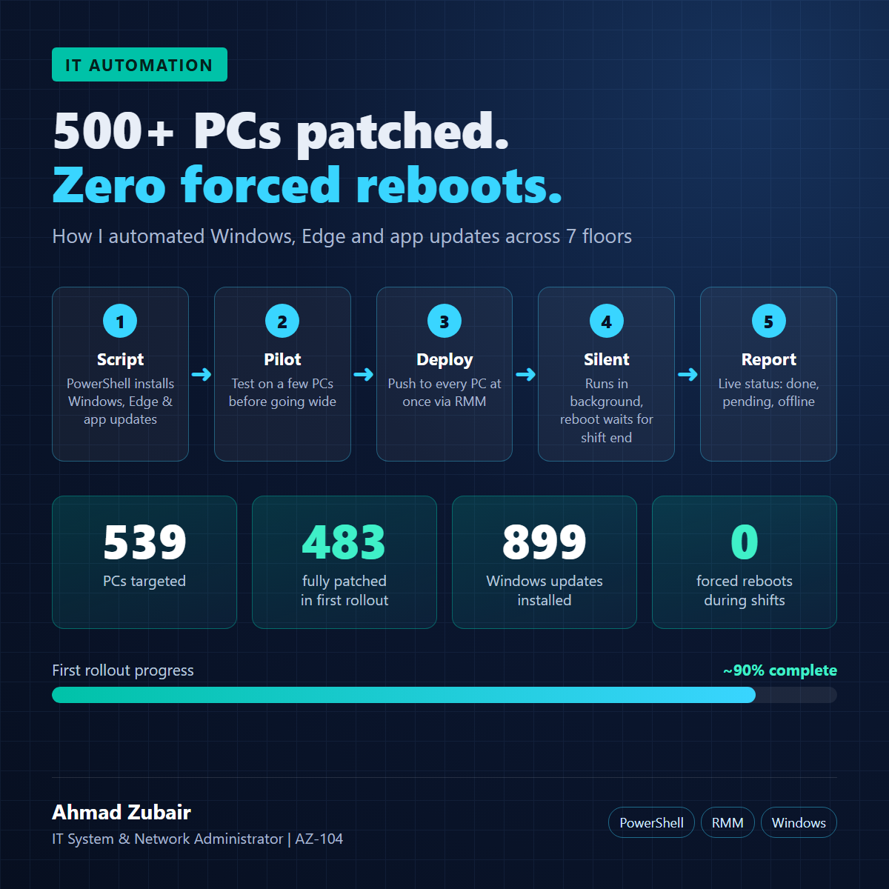

What I do
I keep a 600+ PC healthcare environment patched, clean and secure, and I automate the repeat work so it runs every week without manual effort. Each project below shows the problem, how I solved it, and the result.
1. Weekly IT & Security Automation Plan
TransCure (US medical-billing company, ~700 staff) · runs automatically every Wednesday
Problem: patching, software checks and security checks were manual, slow and easy to miss, across 7 floors of PCs that run a night shift.
Solution: one automated weekly cycle that runs mid-shift, never restarts PCs while people work, and produces two PDF reports for management and an Excel tracker for IT.
2. Patch Management Automation
Windows, Microsoft Edge and application updates for 539 PCs
Approach
- PowerShell agent script installs Windows, Edge and app updates silently in the background.
- Deployed to all PCs at once through Tactical RMM.
- No forced reboots during work; the restart waits until the shift ends.
- Live status report: done, pending or offline per PC.
- Pilot group first, then full rollout.
Results (first rollout)
| Measure | Result |
|---|---|
| PCs targeted | 539 |
| PCs fully patched | 483 (~90%) |
| Windows updates installed | 899 |
| Forced reboots during shift | 0 |

3. Software Inventory & Approved / Unapproved Policy
608 PCs across 7 floors · HIPAA-focused software control
- Automated software inventory and compliance reports for 608 PCs.
- One tracker with tabs: All Software · Approved · Unapproved · Need Decision · Errors & Issues. Typing an app name approves it.
- Policy of ~170 approved and ~55 unapproved applications. Medical billing and EHR apps are protected and never removed.
- Unapproved remote-control tools, personal VPNs, personal cloud storage and consumer browsers removed automatically; conflicting antivirus removed manually.
- Department exceptions handled through approved groups instead of one-off changes.
- Removed unapproved apps and 160+ web-app (PWA) shortcuts from 500+ PCs.
Why it matters in healthcare: unapproved remote tools and personal cloud apps are a direct path for patient data (PHI) to leave the company.
4. Night Security & Forensics Check
Automated security health check with evidence for investigations
- Runs a quick virus scan on every PC, then checks antivirus status, signatures and disk encryption.
- Investigates remote-access tools found on PCs and records evidence (CSV) for follow-up.
- Catch-up run for PCs that were offline during the first pass.
- Produces a management PDF (security & forensics) and keeps raw evidence for 90 days.
5. Active Directory Group Policy Audit & Hardening
Full audit, remediation and verification · September 2026
| Measure | Before | After |
|---|---|---|
| Critical findings | 1 | 0 |
| Policies with no settings | 1 | 0 |
| Duplicate settings between policies | 16 | 0 |
| Enforced links protecting the security baseline | 0 | 7 |
| Policies failed after verification | — | 0 of 48 |
Most important finding
A screen-lock policy was linked to about 550 PCs but contained no settings, so no computer locked when a user walked away — a direct HIPAA workstation-security gap. I found it by checking policy contents, not just links, and fixed it (lock after 15 minutes).
What the environment uses
- Tiered administration (Tier 0 / 1 / 2) with logon restrictions.
- DISA STIG Windows 10 baseline with a documented deviations policy.
- Windows LAPS, Windows Update for Business, device control (USB, Bluetooth, optical), browser controls.
- Advanced audit policy and PowerShell logging for SIEM.
6. Tactical RMM — Production Admin & Self-Built Home Lab
Remote monitoring & management
- Use Tactical RMM daily to manage the company's Windows fleet.
- Run my patching, inventory, clean-up and security scripts through it (projects 1–4).
- Self-hosted Tactical RMM v1.6.1 on Debian 13 (VMware Workstation).
- Stack: nginx, PostgreSQL, Redis, NATS, MeshCentral, Celery.
- Admin account with 2FA; lab certificate and DNS set up.
- Wrote a full deployment runbook and interview Q&A from the build.
7. Security Monitoring Operations
Day-to-day SOC and network monitoring
| Tool | My role | What I do |
|---|---|---|
| Wazuh SIEM | Run & monitor | Triage critical alerts (levels 12–15), review vulnerability detections, track agent health. |
| Velociraptor | Run & monitor | Endpoint visibility and investigation support. |
| LibreNMS + Grafana | Administer | SNMP alerts and dashboards for switches, firewalls and servers. |
| PRTG | Deployed by me | Network monitoring on an on-prem server. |
Wazuh, Velociraptor, LibreNMS and Grafana were deployed by the company's cybersecurity consultant; I have admin access and operate them daily.
8. Earlier Work — IT Support Engineer
Sep 2025 – Feb 2026 · promoted from intern to administrator and team lead in under 6 months
- Set up Aruba and UniFi access points; deployed virtual machines on VMware ESXi.
- Managed Cisco switches and Fortinet firewalls (now as administrator).
- Onboarding and offboarding: system setup, account creation and access removal.
- Helpdesk and ticketing, IT inventory and asset issuance, remote support via RDP.
Skills & Certifications
Certification: Microsoft Certified: Azure Administrator Associate (AZ-104), 2026
Windows ServerActive DirectoryGroup PolicyCiscoFortinetAruba / UniFiVMware ESXiAzurePowerShellPythonTactical RMMWazuhVelociraptorLibreNMS / GrafanaPRTGHIPAA controls